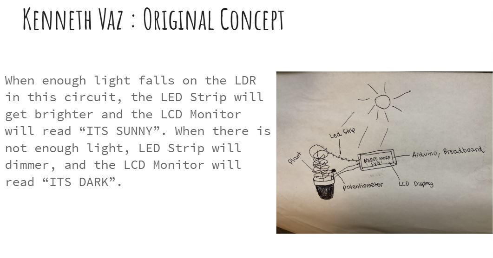
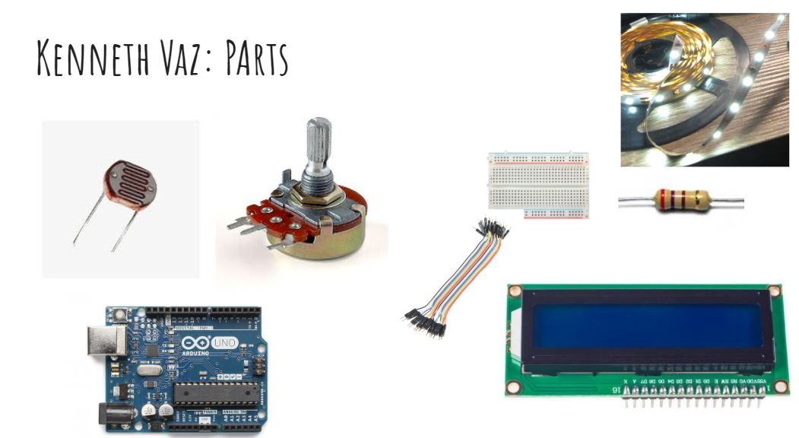
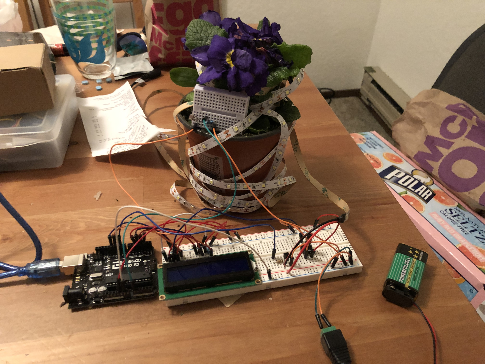
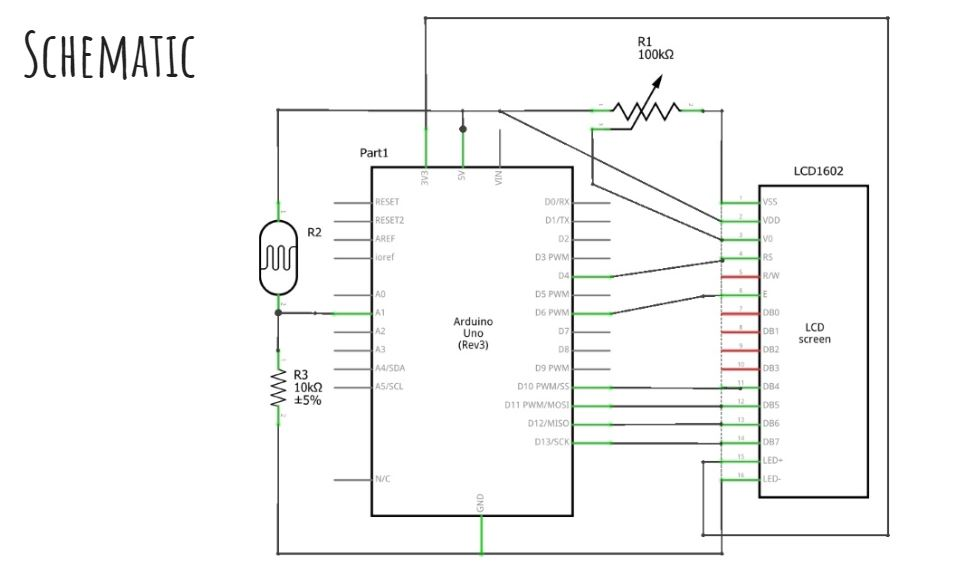
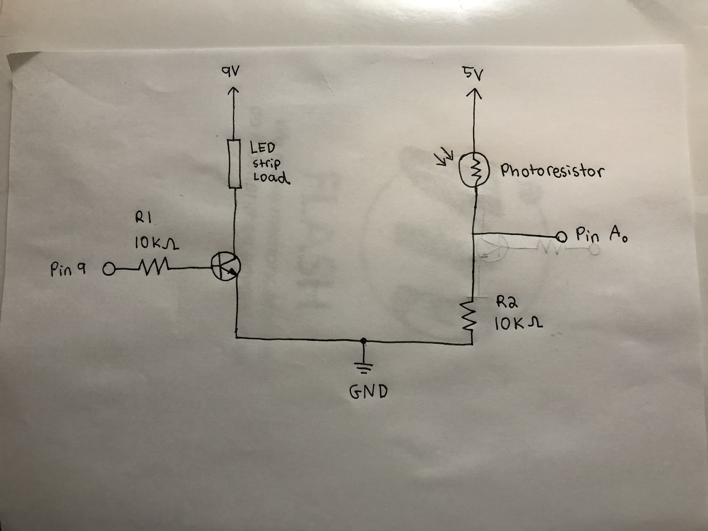
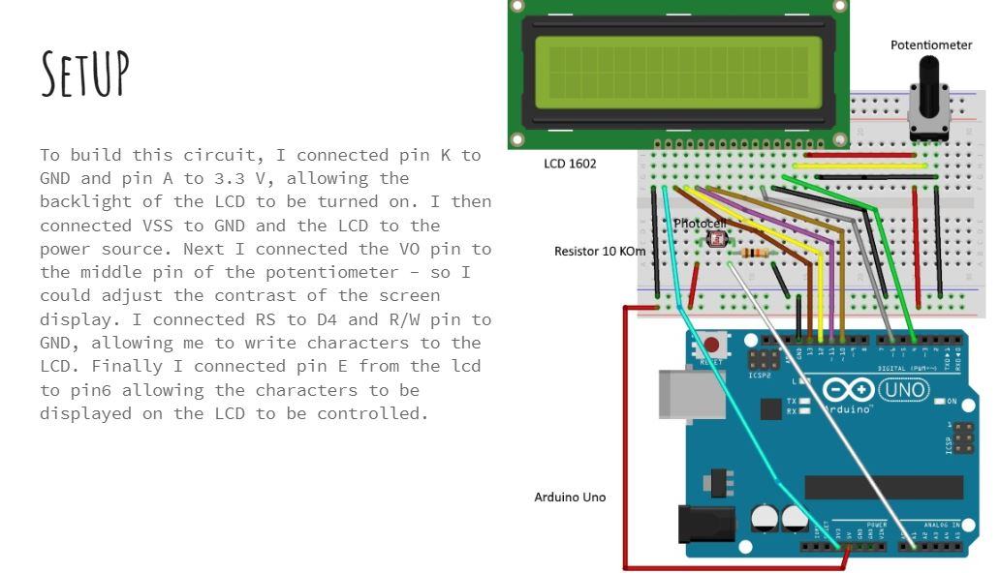
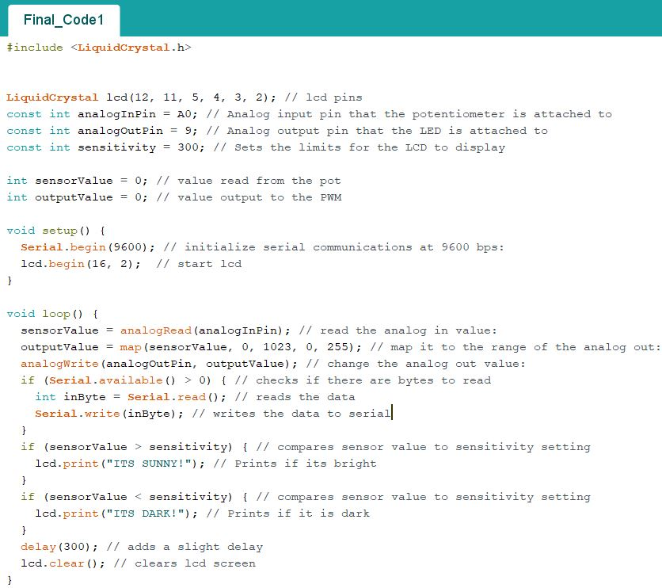

This sketch shows my project's original concept.

These are some vital parts needed to build this circuit.

My circuit has three main components, the transistor and LED strip load, the lcd screen and potentiometer, and the photoresistor which goes in the plant's pot.


I connected Pin 9 of my Arduino to a 10k ohm resistor and then to a transistor which was connected to the LED strip on one side and to ground and the 9V battery on the other. Similarly Pin A0 is connected to a 10k ohm resistor leading to ground and 9V on one side, and to a photoresitor and 5V on the other. My photoresistor is also hooked up to the LCD Screen to allow it display values, if programmed to do so. This schematic safely allows the transistor to ampfliy the current of the LED strip, while having the resistors balance out the load.

Arduino Code:

My code works by reading the data from the photoresistor and checking to see if it is greater or less than the set threshold of the sensitivity. Based on the readings, the lcd will display if its sunny or dark.
This GIF shows how my concept works in the real world. By covering the photoresistor, the lights around my plant gets darker and the lcd reads "Its Dark"!